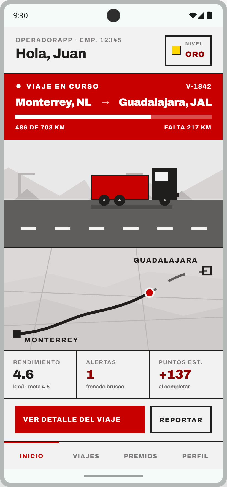
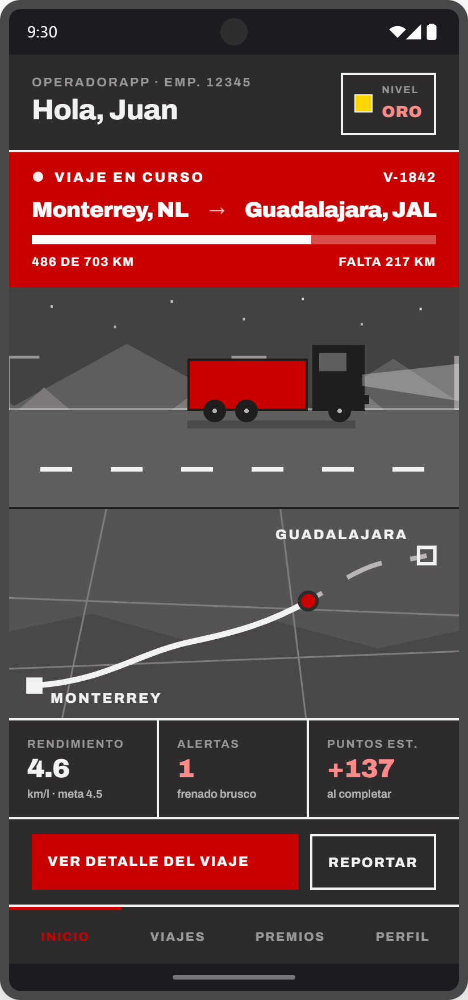

Inicio con viaje en curso
La compañera de ruta del operador de tractocamión: dónde va, cómo va manejando y qué está ganando — en una sola pantalla, sin tocar nada.
El producto que ya usan los operadores


Cumplimiento primero: relojes de horas de servicio, puntaje de manejo y tareas de seguridad. Mide al operador, pero no lo premia.


Despacho primero: el viaje como ficha de datos y el mapa de ruta. Resuelve la operación, no la relación con el operador.
Las dos le hablan a la empresa. Ninguna convierte el turno en progreso, nivel y premios — ahí entra OperadorApp.
Se lee en la cabina, no en un escritorio
Un vistazo, no una lectura
Cada dato vive en su propia celda con regla visible. Ningún número por debajo de 23px.
Alto contraste, sin adornos
Tinta sobre fondo claro, rojo solo para el estado del viaje y la acción principal.
Acciones fijas abajo
Ver detalle y Reportar nunca se van con el scroll. Área táctil de 48px mínimo.

Seis bandas, una jerarquía
El tracto dice cómo va el viaje
Las tres entradas son las mismas del diseño técnico: speed, timeOfDay y mechanicalState. Nada se calcula en la pantalla.
Cuatro capas, un solo dato
De noche cambian cielo, faros y estrellas; a más de 88 km/h aparecen ráfagas de movimiento. Al detenerse, todo se congela salvo el ralentí del motor.
Tres números y su consecuencia
Modo oscuro con escena de noche
La misma jerarquía invertida sobre fondo oscuro: tinta y fondo cambian de papel, el rojo sigue siendo el estado del viaje y la acción principal, y el texto en acento usa el paso claro de la rampa para mantener el contraste.
La animación reacciona a la hora real: cielo nocturno, cono de faros encendido y estrellas — sin cambiar una sola regla de la interfaz.
